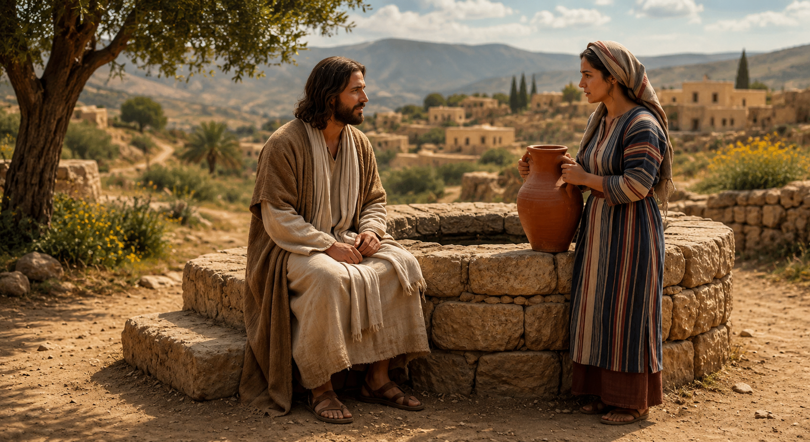

"Era-lhe necessário passar por Samaria."(BÍBLIA SAGRADA. Evangelho de João 4:4.)
À primeira vista, esta parece apenas uma informação geográfica.
Mas não é.
Na verdade, esta pequena frase revela algo extraordinário sobre Jesus.
Ele tinha um encontro marcado.
Não marcado por homens.
Não marcado por calendários.
Não marcado por coincidências.
Marcado pelo amor de Deus.
Naquele dia, uma mulher samaritana iria ao poço buscar água.
Ela não estava procurando Jesus.
Ela não estava orando.
Ela não estava esperando um milagre.
Ela simplesmente foi cumprir uma necessidade da vida.
A sobrevivência depende da água.
Todos precisamos dela.
Por isso ela foi.
A ela era necessário buscar água.
Mas a Ele era necessário passar por Samaria.
Os judeus e os samaritanos possuíam uma longa história de conflitos.
Havia diferenças étnicas, religiosas, culturais e históricas.
Os judeus consideravam os samaritanos espiritualmente impuros.
Os samaritanos possuíam seu próprio centro religioso no Monte Gerizim.
Muitos judeus evitavam passar por Samaria, mesmo que isso tornasse a viagem mais longa.
Mas Jesus não evitou.
Ele atravessou a barreira.
Ele atravessou o preconceito.
Ele atravessou a religião.
Ele atravessou a distância.
Porque havia uma alma sedenta esperando por Ele.
Talvez você pense que seus dilemas religiosos, suas dúvidas, seus erros ou suas opiniões sobre Jesus sejam obstáculos.
Mas eles não são.
Assim como Jesus atravessou Samaria, Ele atravessa as barreiras da sua vida.
Ele vem até você.
"Dá-me de beber."(BÍBLIA SAGRADA. Evangelho de João 4:7.)
É interessante perceber que Jesus não inicia a conversa oferecendo algo.
Ele começa pedindo.
Ele pede água.
Ele demonstra interesse.
Ele cria uma ponte.
Ele se aproxima.
Mesmo sabendo tudo sobre aquela mulher.
Mesmo conhecendo sua história.
Mesmo conhecendo seus fracassos.
Mesmo conhecendo seus segredos.
Ele se aproxima.
Assim acontece com você.
Mesmo que você O ignore.
Mesmo que você O julgue.
Mesmo que você O rotule.
Mesmo que você pense que Ele está distante.
Ele continua se aproximando.
Séculos antes, outro rei experimentou a sede.
Davi estava em combate contra os filisteus.
Em determinado momento, expressou em voz alta um desejo:
"Quem me dera beber da água do poço que está junto à porta de Belém!"(BÍBLIA SAGRADA. 2 Samuel 23:15.)
Três de seus valentes ouviram aquelas palavras.
Arriscaram suas vidas.
Romperam as linhas inimigas.
Buscaram a água.
E a trouxeram ao rei.
Aquela água era preciosa porque representava amor, lealdade e sacrifício.
Agora compare essa cena com Jesus.
O Rei dos reis também tem sede.
Mas não sede de água.
Sede de almas alcançadas.
Sede de vidas restauradas.
Sede de pessoas reconciliadas com Deus.
Sede de ver o Evangelho chegar aos confins da terra.
Sua sede começou a ser saciada quando aquela mulher deixou seu cântaro e correu para anunciar Jesus ao seu povo.
"Muitos samaritanos daquela cidade creram nele."(BÍBLIA SAGRADA. Evangelho de João 4:39.)
Ela encontrou Jesus.
E imediatamente outras pessoas passaram a procurá-Lo.
A mulher possuía uma história complicada.
Jesus revelou que ela já tivera cinco maridos.
E que o homem com quem vivia naquele momento não era seu marido.
Sua vida sentimental estava em ruínas.
Mas Jesus não iniciou o diálogo com condenação.
Ele iniciou com compaixão.
Ele não ignorou a verdade.
Mas também não a destruiu por causa da verdade.
Ele desejava ajudá-la.
Libertá-la.
Restaurá-la.
Saciar sua alma.
A religião havia construído muros.
Jesus construiu uma ponte.
Ela falou sobre templos.
Ele falou sobre adoração verdadeira.
Ela falou sobre tradições.
Ele falou sobre transformação.
"Quem beber da água que eu lhe der nunca mais terá sede."(BÍBLIA SAGRADA. Evangelho de João 4:14.)
Existem muitas sedes na existência humana.
Sede de amor.
Sede de justiça.
Sede de compreensão.
Sede de afeto.
Sede de paz.
Sede de pertencimento.
Sede de propósito.
Sede de perdão.
Sede de eternidade.
Nenhuma dessas sedes é plenamente satisfeita pelas coisas deste mundo.
Mas Cristo pode satisfazê-las.
"Pode uma mulher esquecer-se tanto do filho que cria, que não se compadeça dele? Ainda que esta se esquecesse dele, eu, todavia, não me esquecerei de ti."(BÍBLIA SAGRADA. Isaías 49:15.)
"Deixo-vos a paz, a minha paz vos dou."(BÍBLIA SAGRADA. Evangelho de João 14:27.)
Em várias partes do mundo existem testemunhos de pessoas que afirmam ter conhecido Jesus por meio de sonhos, visões e experiências que as levaram a buscar o Evangelho.
Diversos relatos provenientes de contextos muçulmanos descrevem homens e mulheres que começaram a procurar Cristo após experiências que despertaram profunda convicção espiritual.
Mais tarde encontraram o Evangelho, leram as Escrituras e passaram a segui-Lo.
Por quê?
Porque Jesus continua passando pelas Samarias deste mundo.
Ele continua encontrando pessoas improváveis.
Ele continua atravessando fronteiras.
Ele continua alcançando os sedentos.
Talvez sua sede seja diferente da sede da mulher samaritana.
Talvez ninguém ao seu redor saiba o que realmente está faltando em sua vida.
Talvez você tenha tentado preencher esse vazio com trabalho, relacionamentos, dinheiro, religião, prazer ou sucesso.
Mas a sede permanece.
A boa notícia é que Jesus continua se aproximando.
Ele continua dizendo:
"Quem tem sede, venha a mim e beba."(BÍBLIA SAGRADA. Evangelho de João 7:37.)